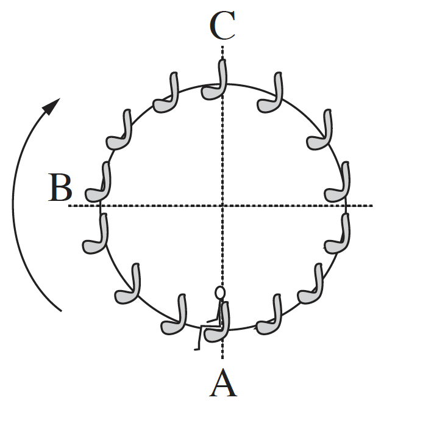
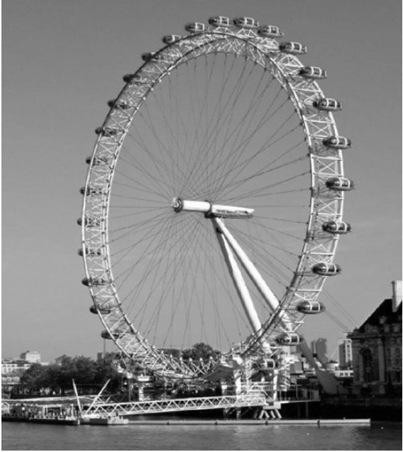

שאלה 3
לרגל חגיגות תחילת האלף השלישי נבנה בלונדון פארק שעשועים ובו גלגל-ענק
שקוטרו 120 m, הנקרא "העין הלונדונית". גודל מהירות הסיבוב של הגלגל-ענק הוא קבוע, וסיבוב אחד שלו נמשך 20 דקות.
לפניכם תצלום של הגלגל-ענק ותרשים המתאר את האירוע הנדון בשאלה.


(צילום: Crendo)
על אחד הכיסאות של הגלגל-ענק יושב ילד. מסת הכיסא עם הילד M = 120 kg.
ראו במערכת "כיסא + ילד" גוף נקודתי, וענו על סעיפים א-ה.
האם בזמן שהגלגל מסתובב התאוצה של המערכת "כיסא + ילד" שווה ל-0 ? נמקו.
(7 נקודות)
קבעו מהם הכוחות הפועלים על המערכת "כיסא + ילד" כאשר הגלגל מסתובב.
העתיקו למחברותיכם את הטבלה שלפניכם. הוסיפו לטבלה שורה עבור כל אחד מן הכוחות שכתבתם בתת-סעיף (1), והשלימו בה את הנתונים המתאימים לפי הכותרות.
שימו לב: הגלגל-ענק מסתובב בכיוון השעון. הנקודות A, B ו-C מסומנות בתרשים.
| שם הכוח | כיוון הכוח | ||
|---|---|---|---|
| בנקודה A | בנקודה B | בנקודה C | |
הוסיפו לטבלה שבמחברותיכם שורה עבור הכוח השקול, והשלימו בה את הנתונים המתאימים.
(7 נקודות)
ברגע t = 0 המערכת "כיסא + ילד" נמצאת בנקודה B והיא נעה כלפי מעלה.
שרטטו במחברותיכם גרף מקורב של המקום האנכי של המערכת "כיסא + ילד" כפונקציה של הזמן, במשך סיבוב שלם אחד של הגלגל.
(7 נקודות)
חשבו את שינוי האנרגיה המכנית של מערכת "כיסא + ילד" (ביחס לכדור הארץ), בפרק הזמן 0 < t < 0.375T. T הוא זמן המחזור של סיבוב הגלגל-ענק.
(6 נקודות)
קבעו אם העבודה הכוללת הנעשית על מערכת "כיסא + ילד" בפרק הזמן המצויין בסעיף ד היא חיובית, שלילית או שווה לאפס. נמקו את קביעתכם.
(6.33 נקודות)